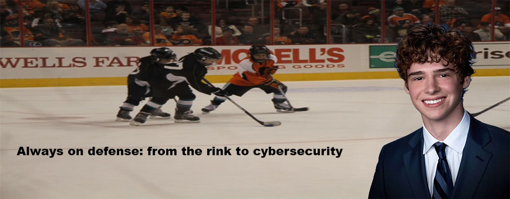

My name is Ethan Robinson, and I'm a student at Syracuse University majoring in Information Management and Technology with a concentration in information security. I'm particularly interested in the new age of cybersecurity and how technology can be used to protect organizations, individuals, and their information. My goal is to build a career at the intersection of technology and business.
Through my coursework and internship experience, I've developed skills in cybersecurity, networking, data analysis, and professional communication. I also have experience with cybersecurity tools and different professionals ranging from numerous different backgrounds and cultures.
Outside of the classroom, I enjoy playing and watching sports, especially ice hockey which I grew up playing. I’m from a bit outside of Philadelphia and I’m a diehard fan of all the city’s teams. I love to travel, and one of my favorite experiences was studying abroad for a semester in Madrid, where I got to experience new cultures and see much of Europe. I have two brothers, one of whom also went to Syracuse, so I grew up hearing about the campus long before I got here myself.
As I continue my education at Syracuse, I'm looking forward to building on my technical and business skills and pursuing a career in cybersecurity and technology.
© 2020